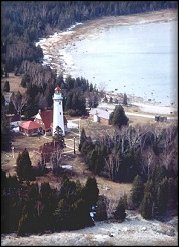
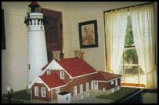
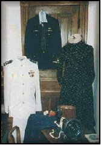
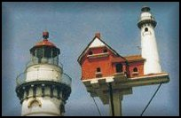

 |
Museum
Hours and Tower Tours Memorial Day through mid October 10:00 a.m. - 6:00 p.m. Seven days a week (depending upon availability of volunteer tour guides) Private groups tours upon request. Call (906) 283-3860 May-Sept. (906) 283-3317 Oct-April Schools can book Christmas tours early at (906) 283-3317 |
|

Working together and caring for the past...
The Seul Choix Point Lighthouse is operated by the Gulliver Historical Society in cooperation with the Department of Natural Resources. Funded by the Society, moneys are generated from Federal and State grants, private donations, fund-raisers, memorials, gift shop sales, historic book sales and the Adopt a Step or Brick program. The restoration of this site is being assisted by dedicated volunteers within the community. Our goal is to preserve the structures and promote an awareness and appreciation of the unique maritime history this light played in the Gulliver area.


Take a walk into the past as you stroll through the lightkeeper's living quarters. Rooms have been decorated, as they would have appeared in the 1900-1930 period.

|
|
||